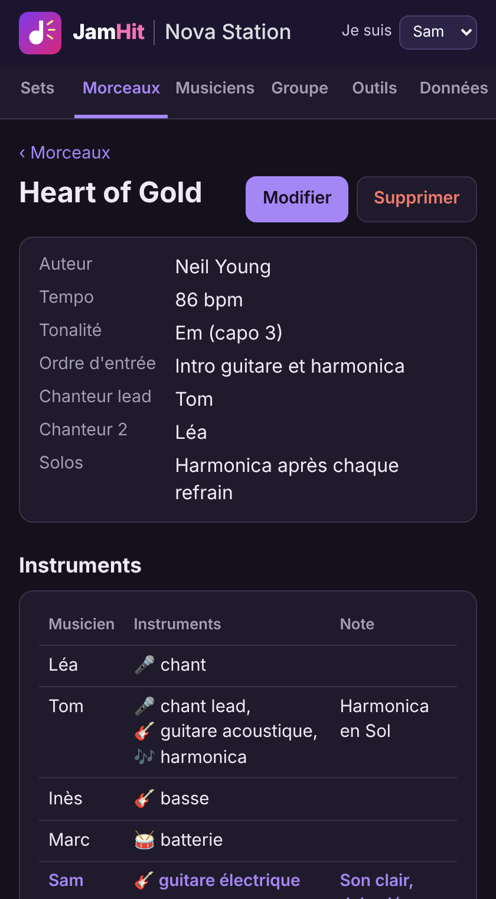
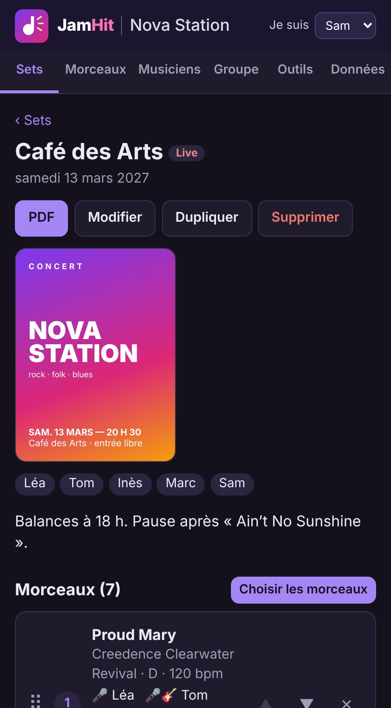
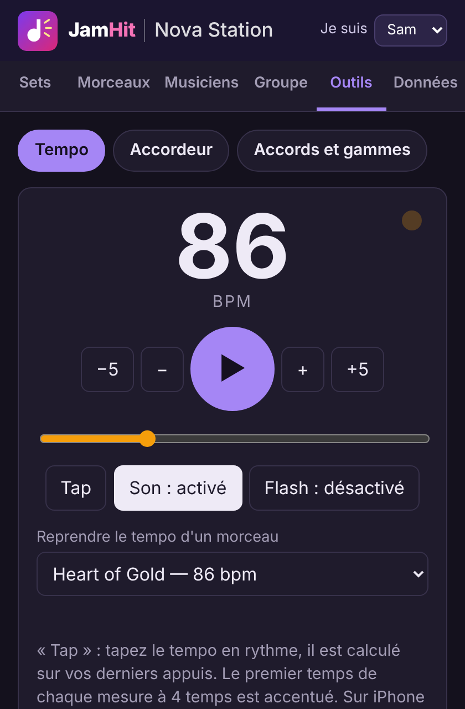
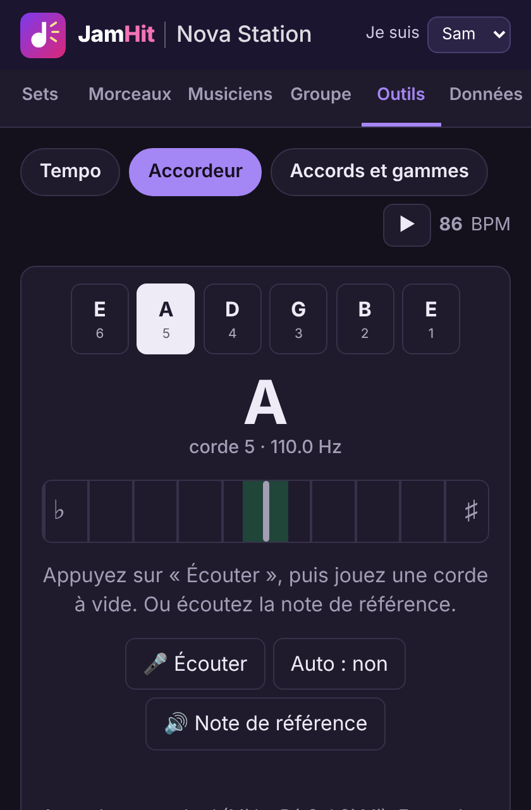
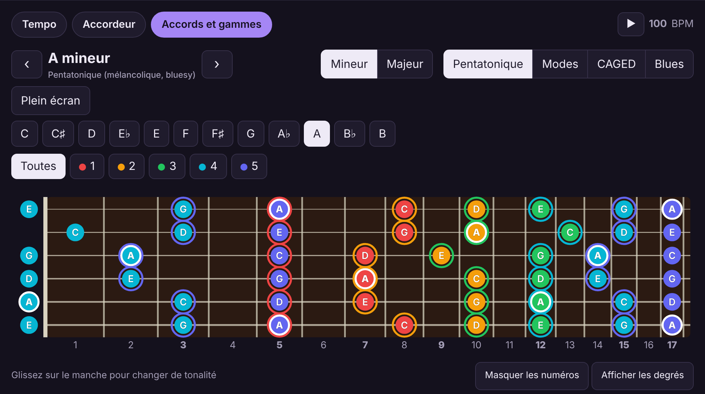
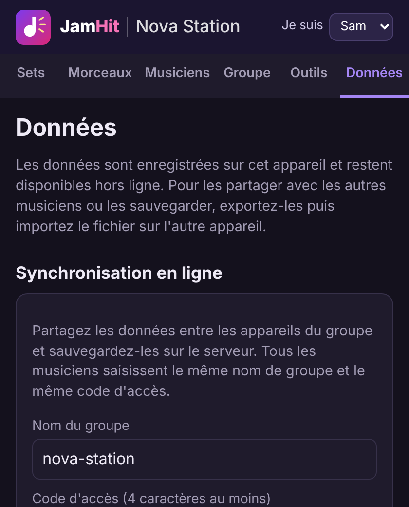

Prise en main
Dix minutes suffisent pour préparer la prochaine répétition. L'application comporte six onglets : Sets, Morceaux, Musiciens, Groupe, Outils et Données. Tout ce que vous saisissez est enregistré immédiatement, sans bouton « Sauvegarder ».
1. Installer l'application
JamHit s'utilise dans le navigateur, mais il est préférable de l'ajouter à l'écran d'accueil : elle s'ouvre alors comme une application et fonctionne sans réseau.
- iPhone / iPad (Safari) : bouton Partager, puis Sur l'écran d'accueil.
- Android (Chrome) : menu ⋮, puis Installer l'application ou Ajouter à l'écran d'accueil.
- Ordinateur (Chrome, Edge) : icône d'installation à droite de la barre d'adresse.
Au premier lancement, l'application contient un groupe de démonstration fictif, entièrement rempli, pour découvrir les écrans. Un bandeau le rappelle en haut de page. Deux façons d'en sortir :
- Créer mon groupe : vous donnez le nom de votre groupe et choisissez un code d'accès. Le groupe est créé en ligne (il faut du réseau à ce moment-là) et vous repartez d'une application vide, synchronisée d'office.
- Se connecter à mon groupe : votre groupe utilise déjà JamHit. Saisissez son nom et son code d'accès, ses données remplacent la démonstration. Sur la page de présentation, c'est le bouton Connexion.
2. Dire qui vous êtes
En haut à droite, choisissez votre prénom dans Je suis. Votre nom ressort alors en couleur dans les listes, avec votre note personnelle pour chaque morceau, et la fiche PDF vous est proposée par défaut.
3. Le groupe et les musiciens
- Onglet Groupe : bouton Modifier pour le nom, le logo, l'image de fond et les liens (site, Facebook, Instagram, vidéo).
- Onglet Musiciens : prénom, instruments (séparés par des virgules), date de naissance et photo. Cochez « Musicien invité » pour quelqu'un qui ne joue qu'occasionnellement : il ne sera pas présélectionné dans les nouveaux sets.
- Matériel : sous chaque musicien, la liste de son matériel (instruments, amplis, micros, pédales…). En bas de l'onglet, le matériel commun (sono, table de mixage, retours), en précisant s'il appartient au groupe ou s'il est à louer.
4. Le répertoire
L'onglet Morceaux contient tous les titres du groupe, numérotés. Chaque morceau n'existe qu'une fois : le modifier ici le modifie dans tous les sets.
- + Nouveau morceau : seul le nom est obligatoire, le reste se complète au fil des répétitions.
- Renseignez le tempo, la tonalité et le capo, l'ordre d'entrée, le chanteur lead et le second chanteur, les solos.
- Dans « Instruments par musicien », cochez ce que joue chacun et ajoutez sa note (son, effet, accordage).
- Pour changer l'ordre du répertoire, glissez la poignée ⠿ ou utilisez les flèches ▲ ▼.

5. Préparer un set
Un set est une séance : une répétition ou un concert.
- Onglet Sets, + Nouveau set : nom, date, type (répétition ou live) et musiciens présents.
- Choisir les morceaux : cochez les titres dans le répertoire. Un titre absent peut être créé directement depuis cette fenêtre.
- Mettez-les dans l'ordre en glissant la poignée ⠿. La croix ✕ retire un morceau du set sans le supprimer du répertoire.
- Pour un concert, ajoutez l'affiche par Modifier.

6. La fiche PDF
- Dans le set, bouton PDF.
- Choisissez un musicien (sa fiche personnelle, avec ses instruments et ses notes) ou « Tout le groupe ».
- Dans la fenêtre d'impression, choisissez Enregistrer au format PDF comme imprimante, ou imprimez directement.
7. Partitions et enregistrements
Sur la fiche d'un morceau (liens vidéo, partitions, enregistrements) ou d'un set (enregistrements, photos), le bouton + Ajouter accepte un lien (YouTube, Drive…) ou un fichier de votre appareil, avec un libellé et une date.
8. Les outils d'entraînement
L'onglet Outils regroupe quatre aides pour préparer les séances et les concerts.
- Tempo : un métronome de 30 à 240 BPM. Réglez-le au curseur, avec Tap en tapant le rythme, ou reprenez directement le tempo d'un morceau du répertoire. Son et flash lumineux au choix.

- Accordeur : appuyez sur Écouter, autorisez le micro, puis jouez une corde à vide. L'aiguille indique s'il faut tendre ou détendre. La note de référence peut aussi être jouée.

- Plan de scène : posez les musiciens et leur matériel sur la scène ; l'outil propose le câblage (types et longueurs de câbles), numérote le patch de la table et dresse la liste du matériel apporté, disponible au groupe ou à louer. Chaque set a sa rubrique « Plan de scène » : créez-y un plan, dupliquez-le pour l'adapter à une date, ou associez un même plan à plusieurs concerts et répétitions.
- Accords et gammes : le manche complet avec les positions de la pentatonique, des modes, de la gamme blues et les formes d'accords CAGED, dans toutes les tonalités. Glissez sur le manche pour changer de tonalité ; Plein écran ne garde que le manche.

9. Synchroniser le groupe
La synchronisation est automatique : dès qu'un appareil est relié au groupe, il n'y a plus rien à faire.
- Le premier musicien crée le groupe (Créer mon groupe) et choisit le code d'accès.
- Les autres ouvrent JamHit, choisissent Se connecter à mon groupe et saisissent le même nom et le même code.
- Pour changer de groupe ou prêter l'appareil : onglet Données, Se déconnecter du groupe. Les données quittent l'appareil et restent sur le serveur.

- Les modifications partent ensuite toutes seules. Un nuage ☁️ en haut de l'écran indique que tout est synchronisé, ⚠️ signale un problème.
- Sans réseau (salle de répétition, scène), vous continuez à travailler normalement : les changements partent au retour de la connexion.
- Si deux musiciens modifient la même fiche, la modification la plus récente est conservée.
- Le code d'accès donne le droit de tout lire et de tout modifier : ne le communiquez qu'aux membres du groupe.
10. Sauvegarder et importer
- Tout (JSON, avec fichiers) : une copie complète, à conserver hors de l'appareil. C'est aussi le moyen de transmettre les données sans synchronisation.
- CSV : morceaux, musiciens ou sets dans un fichier lisible par un tableur, sans les fichiers joints.
- Importer : un fichier JSON (fusion ou remplacement) ou CSV. À l'import d'un CSV, les lignes déjà connues sont mises à jour, les autres ajoutées.
11. Questions fréquentes
Je ne vois pas la dernière version de l'application.
Rechargez la page une ou deux fois avec du réseau. Le numéro de version figure en bas de l'onglet Données.
J'ai modifié un morceau dans un set : est-il modifié ailleurs ?
Oui. Un morceau est une fiche unique, partagée par le répertoire et tous les sets.
Puis-je effacer les données du site dans mon navigateur ?
Seulement si l'appareil est synchronisé ou après un export JSON : sinon vos saisies sont perdues.
Un fichier joint n'apparaît pas sur un autre appareil.
Les fichiers sont téléchargés à l'ouverture de la fiche ; il faut du réseau la première fois.